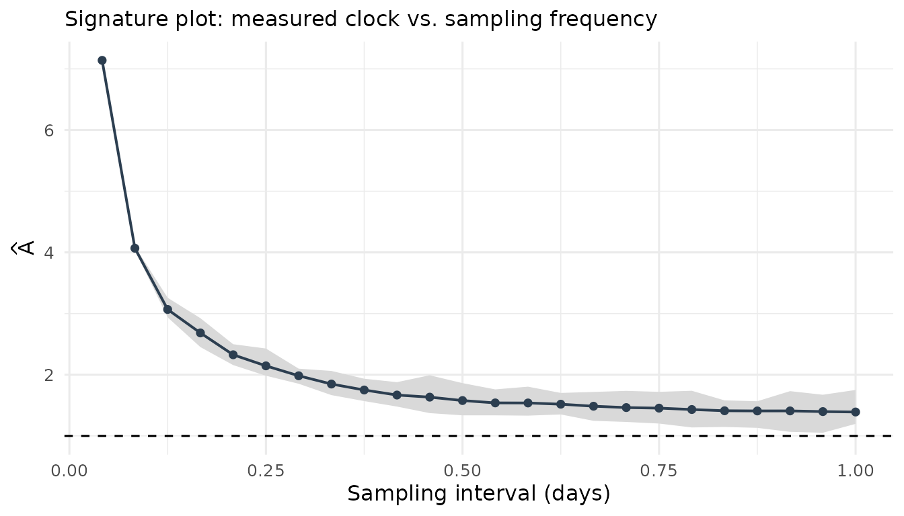

Does the estimator work? Validation on simulated data
Source:vignettes/eventclock-validation.Rmd
eventclock-validation.Rmd
library(eventclock)
set.seed(42)Why validate
Before trusting the Event Clock on real data, a user should know: is it biased when only about 30 daily prices are available? Are its confidence intervals right? What do the robust variants measure when news arrives in one big jump? How much does trading noise inflate it?
Real data cannot answer these questions because the true clock is
unknown. Simulated data can. ec_simulate_path() draws
probability paths from the package’s model (the transition law in the
formula book of vignette("eventclock-brexit")) with a
known clock \(A\), so any gap
between estimate and truth is the estimator’s doing. Throughout, \(L = \log\{q/(1-q)\}\) are the log odds of
the event probability \(q\), and the
estimate is \(\widehat A = \sum (\Delta
L)^2\), the sum of squared log-odds changes
(method = "rv" in event_clock()).
A small helper turns a simulated path into the package’s input format:
path_to_ep <- function(p) {
as_event_prices(
tibble::tibble(time = as.Date("2020-01-01") + p$step, q = p$q),
clip = c(1e-8, 1 - 1e-8) # switch off the default [0.01, 0.99] clipping
)
}Bias and precision with few observations
For each window length we simulate 1000 paths with true clock \(A = 0.5\) — a typical one-month value — and
compute \(\widehat A\) on each. (The
vectorized sum below is exactly what
event_clock(method = "rv") computes.)
A <- 0.5
reps <- 1000
grid <- c(15, 30, 60, 120, 250)
sims <- lapply(grid, function(n) {
p <- ec_simulate_path(n_paths = reps, n_steps = n, q = 0.4, A = A)
vapply(split(p$L, p$path), function(L) sum(diff(L)^2), numeric(1))
})
tab <- data.frame(
n_obs = grid,
mean = sapply(sims, mean),
bias_pct = 100 * (sapply(sims, mean) / A - 1),
theory_bias_pct = 100 * A / (4 * grid),
mc_error_pct = 100 * sapply(sims, sd) / sqrt(reps) / A,
sd = sapply(sims, sd)
)
knitr::kable(tab, digits = 3)| n_obs | mean | bias_pct | theory_bias_pct | mc_error_pct | sd |
|---|---|---|---|---|---|
| 15 | 0.514 | 2.718 | 0.833 | 1.195 | 0.189 |
| 30 | 0.506 | 1.162 | 0.417 | 0.834 | 0.132 |
| 60 | 0.501 | 0.151 | 0.208 | 0.562 | 0.089 |
| 120 | 0.500 | -0.009 | 0.104 | 0.404 | 0.064 |
| 250 | 0.499 | -0.132 | 0.050 | 0.287 | 0.045 |
The only systematic bias is tiny and known: given the outcome, the
log odds also drift a little toward it, which adds \(A^2/(4n)\) to the expected sum — under 1%
here (theory_bias_pct). The measured bias lies within about
two simulation errors (mc_error_pct) of it. What short
windows cost is dispersion (sd): with 30 daily
observations the estimate typically misses by about a quarter of its
value, which is why interval estimates matter.
Confidence intervals
event_clock(se = TRUE) adds a standard error, estimated
from the sum of fourth powers of the log-odds changes, and a confidence
interval built for \(\log A\) and
transformed back (so it stays positive and is asymmetric). Do the
intervals cover the truth as often as they claim?
coverage <- function(conf, n_steps, reps = 500, A = 0.5) {
hits <- vapply(seq_len(reps), function(i) {
p <- ec_simulate_path(n_paths = 1, n_steps = n_steps, q = 0.4, A = A)
r <- event_clock(path_to_ep(p), methods = "rv", se = TRUE, conf = conf)
r$ci_lo <= A && A <= r$ci_hi
}, logical(1))
mean(hits)
}
cov <- expand.grid(nominal = c(0.90, 0.95), n_obs = c(30, 60))
cov$empirical <- mapply(coverage, cov$nominal, cov$n_obs)
cov$mc_error <- 1.96 * sqrt(cov$nominal * (1 - cov$nominal) / 500)
cov
#> nominal n_obs empirical mc_error
#> 1 0.90 30 0.848 0.02629616
#> 2 0.95 30 0.918 0.01910372
#> 3 0.90 60 0.864 0.02629616
#> 4 0.95 60 0.950 0.01910372Coverage is close to the nominal level, and in the shortest windows
somewhat below it: with 30 observations, the 95% interval covered the
truth in 91.8% of the replications, with 60 observations in 95%
(mc_error is the 95% simulation band around the nominal
level). In short windows, treat the intervals as slightly
optimistic.
The clock does not depend on the outcome
The clock measures how much was learned, not in which direction. Paths that end with the event happening (\(J = 1\)) and paths that end without it (\(J = 0\)) carry the same expected clock:
p <- ec_simulate_path(n_paths = 400, n_steps = 60, q = 0.4, A = 0.5)
qv <- vapply(split(p$L, p$path), function(L) sum(diff(L)^2), numeric(1))
J <- vapply(split(p$J, p$path), function(j) j[1], numeric(1))
data.frame(
outcome = c("J = 1", "J = 0"),
mean_A_hat = c(mean(qv[J == 1]), mean(qv[J == 0])),
n_paths = c(sum(J == 1), sum(J == 0))
)
#> outcome mean_A_hat n_paths
#> 1 J = 1 0.5048287 152
#> 2 J = 0 0.5027828 248Both averages sit at the true \(A =
0.5\). Constant or slowly moving risk premia therefore do not
bias the clock: they change how much weight the market puts on each
outcome, not how much the price moves along a given path. Premia that
fluctuate day to day can add to the measured clock;
ec_recovery_set() bounds that effect.
Lumpy news: what the robust variants measure
Real news is lumpy — a debate or a verdict can move the price more in
one day than a month of polls. With jump_share, the
simulator puts part of \(A\) into a few
jump steps. Here half of the true clock (0.25) arrives in a single jump
and the other half (0.25) as a smooth flow:
lumpy <- lapply(seq_len(200), function(i) {
p <- ec_simulate_path(n_paths = 1, n_steps = 60, q = 0.4, A = 0.5,
jump_share = 0.5, n_jumps = 1)
event_clock(path_to_ep(p))[, c("method", "A")]
})
agg <- do.call(rbind, lumpy)
knitr::kable(
aggregate(A ~ method, data = agg, FUN = mean),
digits = 3,
caption = "Mean estimate across 200 lumpy paths (true A = 0.5: 0.25 smooth + 0.25 in one jump)"
)| method | A |
|---|---|
| bipower | 0.298 |
| largest1 | 0.239 |
| largest2 | 0.213 |
| rv | 0.527 |
| truncated | 0.236 |
rv recovers the total clock including the jump.
truncated and largest1 land close to the
smooth part (0.25): they drop the jump. bipower dampens the
jump without removing it entirely and sits in between (0.298).
largest2 drops one ordinary move on top of the jump and so
sits a little lower than largest1. The ratio \(1 - \text{bipower}/\text{rv}\) is a simple
jumpiness index, the share of the clock that came in bursts —
here 0.43, against a true jump share of one half. None of the variants
is wrong; they answer different questions, and comparing them is the
point.
Trading noise and the sampling interval
Traded prices bounce between bid and ask on a coarse price grid. Such noise adds about twice its variance to every measured change, so the finer you sample, the more noise you add up. Here we add noise with a standard deviation of 0.04 in log odds — roughly a one-cent bounce at a price of 0.50 — to an hourly path with true clock \(A = 1\):
p <- ec_simulate_path(n_paths = 1, n_steps = 2000, q = 0.4, A = 1)
noisy <- ec_ilogit(p$L + rnorm(nrow(p), sd = 0.04))
ep_noisy <- as_event_prices(
tibble::tibble(time = as.POSIXct("2024-01-01", tz = "UTC") +
3600 * p$step, q = noisy),
clip = c(1e-8, 1 - 1e-8)
)
plot_signature(ec_signature(ep_noisy, max_every = 24)) +
ggplot2::geom_hline(yintercept = 1, linetype = 2)
At the finest spacing the measured clock is several times the truth
(dashed line); as the spacing grows it falls toward \(A = 1\). Real data show the same pattern —
the hourly-versus-daily gap of the 2024 Polymarket series in
vignette("eventclock-measurement"). A daily snapshot
(pm_daily()) is therefore a conservative default, but it
also misses genuine intraday news: report more than one sampling
interval.
Where next
-
vignette("eventclock-measurement")— sampling, real-time forecasts, and two venues on real data; -
vignette("eventclock-event-betas")— which assets move with the event probability.